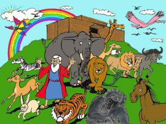

¿Era tan sabio el dios de los hebreos que no pudo pensar en nada mejor que inundar la tierra entera para matar a los malvados humanos? Eso sería algo así como quemar todo el granero para matar las ratas, o usar una almádena para poner a punto un arbusto de rosas. Ni siquiera el cirujano más burdo del mundo acostumbra usar una guillotina para quitar el lunar del cuello de alguien.
—Skip Church
No sé la clase malvados pecadores estaban en este planeta, pero estoy seguro que si una Inteligencia superior quiso exterminarlos, habría encontrado un método más preciso para localizar a cada uno de ellos por separado. Afirmar el asesinado descuidado de millones de niños inocentes y señoras ancianas indemnes, junto con los perros y gatos, es afirmar absoluta e ineludiblemente que su idea de Dios es la de un loco cósmico.
—Robert Anton Wilson
Si un Dios lo suficientemente inteligente como para diseñar aunque fuera sólo una molécula, y no digamos el Universo entero, se hubiera enloquecido y hubiera decidido cometer un asesinato, aún así sería lo suficientemente inteligente como para asesinar sólo las personas que no le agradaran. Aceptando el dudoso Informe de la Comisión Warren, Lee Harvey Oswald sólo le disparó a un espectador inocente (el gobernador). El dios del inicio del Antiguo Testamento parece no solamente tan loco como Oswald sino más torpe, más estúpido y en general, menos civilizado. King Kong es un convincente retrato de dios, tal como es mostrado en el Antiguo Testamento. Tratar de imaginarse al Hombre Viejo YHWH (Yahweh / Jehová) diseñando aunque fuera un quark, dejando de lado una molécula, es absurdo; Él lo embrollaría todo, entraría en cólera, y destruiría cinco ciudades cercanas para expresar su rabieta infantil.
—Robert Anton Wilson
Los creyentes de la Biblia constantemente están diciéndonos cuan mala era la generación prediluviana. En las películas bíblicas usted prácticamente puede sentir la maldad escurriéndose de esos tipos. ¡Por Júpiter, usted puede verlo! ¿Pero podrían ellos haber hecho cualquier cosa mala que no se halla hecho con igual perversión por las gentes posteriores al Diluvio? Y viceversa, si usted examina el peor rincón del globo en el momento más afligido de su historia, usted todavía podría encontrar, un estándar razonable de decencia, y un número razonable de personas decentes. ¡Y no se olvide de los niños! ¡Los creyentes duros de la Biblia contestan lacónicamente que los niños eran parte del cáncer que tuvo que ser cortado! Su pobre y limitado dios no tenía ninguna opción, supongo. Él no podría permitirles adulterar la pureza de las generaciones postdiluvianas. Pureza que tenía que ser conservada, como la exhibición de Noé en estado de ebriedad después del diluvio (Génesis capitulo 9), por lo que no queda ninguna duda de la influencia malvada que habrían de presentar los niños prediluvianos. Y que horrible habría sido si unos pocos niños prediluvianos hubiesen sobrevivido, pues habrían corrompido a las gentes de Sodoma y Gomorra.
—Dave Matson, On Taking the Bible and Noah’s Flood Literally - Tomando la Biblia y el Diluvio de Noé Literalmente.
El Diluvio: Un castigo infligido a la raza humana por un omnisapiente Dios que no había previsto la maldad de los hombres, se arrepintió de haberlos hecho, y los ahogó una vez para hacerlos mejor: un acto que, como todos nosotros sabemos, fue acompañado por el más gran éxito.
—Voltaire, Diccionario de Teología
¿Por qué llenó Dios el mundo de sus propios hijo, si sabia que tendría que destruirlos? ¿Y por qué me dice este mismo dios cómo debo criar a mis hijos cuándo él ahogó los suyos?
—Robert G. Ingersoll, Some Mistakes of Moses
De algún modo la Biblia se olvida relatarnos que Noé y su familia portaban cada virus, bacterias, protozoarios, pulga, garrapata, piojos, chinche, tenia, y lombrices intestinales que parasitan a los humanos. Por no mencionar que Noé habría tenido que tomar un sólo par de animales para que portaran todas las enfermedades y parásitos que afligen a los animales hoy….
—Skip Church

Se salvaron Noé y su familia …pero ellos estaban cómodos porque estaban llenos de microbios… por que tenían que salvarse demasiados microbios para proporcionar a las futuras razas de hombres desoladoras enfermedades, y sólo había ocho personas a bordo para servirles de hotel.
—Mark Twain, Letters from the Earth - Cartas desde la Tierra
A pesar de la naturaleza catastrófica y mundial del Diluvio del Génesis, muchos animales de tierra firme se negaron a ahogarse. ¡Todavía estaban caminando, construyendo nidos y madrigueras, y defecando en tierra sólida, aún en medio del Diluvio! Si usted no me cree, mire el registro geológico donde quedaron petrificados hormigueros, termiteros, nidos de dinosaurio, nidos de reptil (en la Formación Chinle del Bosque Nacional Petrificado), nidos de aves (de un pariente del flamenco en la formación de río Verde en Wyoming), capullos de la avispa frágiles, células colmenas de abejas, las complejas madrigueras de roedores, estiércol animal en la posición original de deposición cuando endureció en tierra sólida seca, y huellas de insectos y vertebrados mientras caminaban. tal evidencia de moradores vivientes de tierra se han encontrado en diferentes niveles de los estratos geológicos, como si el Diluvio no hubiera hecho muy bien su trabajo de ahogamiento.
—Skip Church
Después de un año en el mar, ¿Cuál es la probabilidad que cualquier semilla de una planta superviviente cayese en una área dónde la temperatura, la lluvia, el suelo y la luz fuese conveniente para su crecimiento?
Asumiendo que algunas semillas llegaron a ser viables, cuánto tiempo tendrían sus flores que esperar antes de los pájaros e insectos llegaran desde el Monte Ararat de manera que se diese la polinización cruzada?… Isaac Asimov recalca que los hebreos antiguos no consideraban las plantas como seres vivos en el mismo sentido que a los animales; por consiguiente ellos no tuvieron ningún problema en imaginarse un árbol de olivos soportando un año bajo el agua para crecer inmediatamente después del diluvio. (¿Recuerda el cuento de la paloma que volvió al arca de Noé con una rama viva de aceitunas en su boca?) los fundamentalistas de hoy deberían de haber aprendido algo de botánica desde entonces, pero ellos todavía insisten sobre el vigor de las aceitunas… Los Creacionistas necesitan empapar semillas en agua salada y barrosa durante un año y luego plantarlas en cieno salado y sin consolidar, en un clima desfavorable sin insectos o aves polinizadores y ver lo que pasa. Sus matemáticos, tan expertos en calcular las improbabilidades para la formación de proteínas, ¿habrán determinado alguna vez las probabilidades de supervivencia de las plantas tras el diluvio?
—Robert A. Moore, The impossible Voyage of Noah’s Ark - El Viaje Imposible del Arca de Noé, Creation/Evolution, Issue 11, Winter 1983.
Tras saturar la tierra con agua salada, el Diluvio se retira. La tierra se seca, el suelo permanece manchado con su pasado salino. Las lombrices de tierra no pueden vivir en él. Las plantas (en su gran mayoría) no pueden crecer en suelo salino. La tierra muere.
—Matt Giwer, Talk. Origins Newsgroup, 30 de abril de 1996.
¿Con la tierra desnuda de plantas, qué comieron todos los herbívoros después desembarcar del arca de Noé? ¡OH esperen, lo olvidaba, no tenían tiempo para comer; ellos estaban ocupados huyendo de los carnívoros hambrientos que desembarcaron tras ellos!
Si Dios es omnisciente, Él NUNCA debe cambiar de opinión. Cambiar sus ideas significa que no sabía lo que iba a pasar, que no sabía el futuro. Aunque la Biblia declara que Dios sabe todas las cosas, desde el principio hasta el fin, también está llena de casos en las que Dios cambia de ideas. Por ejemplo, Éxodo 32:14 “Entonces Jehová se arrepintió del mal que dijo que había de hacer a su pueblo”. hay también Jonás 3:10 “Y vio Dios lo que hicieron, que se convirtieron de su mal camino; y se arrepintió del mal que había dicho que les haría, y no lo hizo.” por supuesto, el caso más espectacular de indecisión de Dios frente a un problema es cuando cambia su opinión sobre la humanidad, y decide asesinar a todos en el planeta con un gran diluvio. Génesis 6:6,7—Y se arrepintió Jehová de haber hecho al hombre en la Tierra… Y dijo: raeré al hombre de la faz de la Tierra… pues me arrepiento de haberlos hecho”. ¿No conoce dios todo “desde el principio hasta el final”, como nos lo han hecho creer? Cuando dios miro al hombre en la creación y “vió que era bueno” ¿acaso se hizo el de la vista gorda ante el hecho de que la humanidad se volvería tan profundamente malvada que todos los hombres, mujeres y niños, millones de ellos, necesitarían ser ahogados en sólo unos quince siglos? Ud. no pensaría que esto es algo que Dios pasaría por alto. Pero al parecer lo hizo. Alguien que conoce el futuro no puede arrepentirse por algo que hizo. Si él se arrepiente de algo, significa que él no sabía el futuro de antemano. Uno puede decir que Él sabía cambiaría de opinión y que Él sabía que lamentaría estas cosas, pero entonces usted tendría que admitir que Él no cambió sus pensamientos de verdad, y que su pesar no era un pesar real - en otras palabras la Biblia se vuelve engañosa. El evento del Diluvio es una de las cosas más perniciosas contra la validez de la Biblia como un registro histórico.
—Ken Harding
Dios hizo todos los animales en un solo día; él podría barrerlos todos en el diluvio y volverlos a crear en un día, cuando los necesitara de nuevo. Por consiguiente es una idea extraña salvar especimenes durante once meses en el arca, siendo consciente de que ocho personas no pudieron alimentarles o darles de beber. Si estos fueron conservados por un milagro, entonces el arca no era necesaria; si se les permitiera haber nadado habría respondido al propósito y habría sido indudablemente más milagroso.
—Mark Twain, God of the Bible vs. God of the present Day
No encontramos el nombre de Noé o de Adán en cualquiera de las dinastías antiguas de Egipto; tampoco se mencionaban entre los babilónicos y sumerios. No podemos comprender cómo el padre de todas las naciones halla sido un desconocido durante tanto tiempo, hasta cuando los libros judíos comenzaron a ser conocidos en Alejandría y se tradujeron al griego bajo uno de los Ptolomeos. En el curso natural de las cosas el nombre de Adán debió de haberse llevado de boca en boca hasta los rincones más lejanos de la Tierra. Yo me aventuraré a afirmar que se requiere un milagro para cerrar los ojos y oídos de todas las naciones - para destruir cada monumento, cada conmemorativo de su primer padre. Qué habría pensado el filósofo y orador romano Cicerón, si un judío pobre, mientras le vendía un bálsamo, le hubiera dicho que todos nosotros somos descendientes de un padre, llamado Adán. Sin duda, Cicerón habría inquirido sobre los grandes monumentos, los testimonios indiscutibles que Noé y sus hijos habrían dejado de nuestro padre común. Después de vuestro llamado Diluvio, él habría dicho, el mundo entero habría resonado con los nombres de Adán y Noé, uno el padre, el otro el restaurador de cada raza. Estos nombres habrían estado en cada boca tan pronto como cada hombre pudiese hablar, en cada pergamino en cuanto pudiese escribir, en la puerta de cada casa en cuanto pudiese construirla, en cada templo, en cada estatua. ¿Acaso queréis decirnos que vosotros conocías tan gran secreto, no obstante oculto de nosotros? Cada persona se ha atribuido a sí mismo algún origen imaginario, aunque ninguno se ha acercado al verdadero origen.
—Voltaire, Diccionario Filosófico, Bajo la entrada “Adán”
Si dios sabe todas las cosas, entonces él sabía que el mundo se ahogaría en el Gran Diluvio cuando creó Adán y Eva. ¿Si este dios es el diseñador supremo, con una inteligencia supuestamente suprema, por qué no recreó al primer hombre y mujer después de la trasgresión, y le ahorró al mundo la imperfección, el dolor y el sufrimiento? O, ¿por qué no creó a Noé como el primer hombre del mundo, si sabía que iba a matarlos a todos? La historia entera del diluvio humea de inconsistencia e irracionalidad.
—Ken Harding, Skip Church
Le invitamos a leer el artículo relacionado: Cómo conversar sobre el Diluvio Universal con los testigos de Jehová (y otros creyentes)
Volver a la sección Examinando las religiones
Comentarios
Comments powered by Disqus